Attach and Debug Linux Kernel Using Xilinx System Debugger (TCF)
It is possible to debug the Linux Kernel using the Xilinx® System Debugger (TCF). Follow the steps below to attach to the Linux Kernel running on the target and to debug the source code.
- Compile the kernel source using the following configuration options:
- CONFIG_DEBUG_KERNEL=y
- CONFIG_DEBUG_INFO=y
- Launch SDK.
- Click .
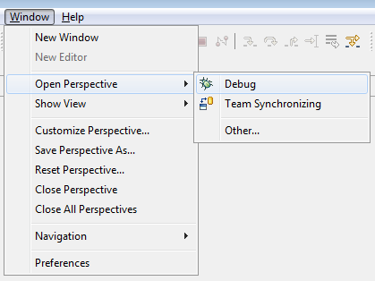
- Click .
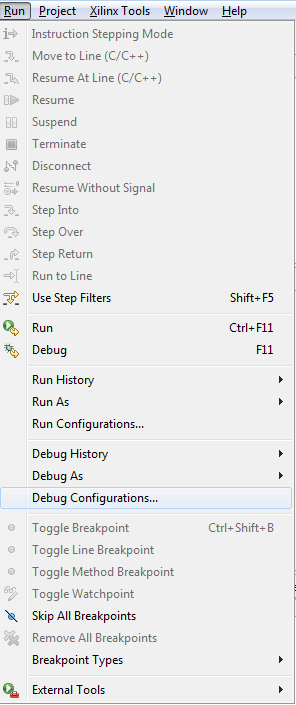
- In the Debug Configurations dialog box, select Xilinx C/C++ application (TCF) and click the New icon. Name the configuration Zynq_Linux_Kernel_Debug.
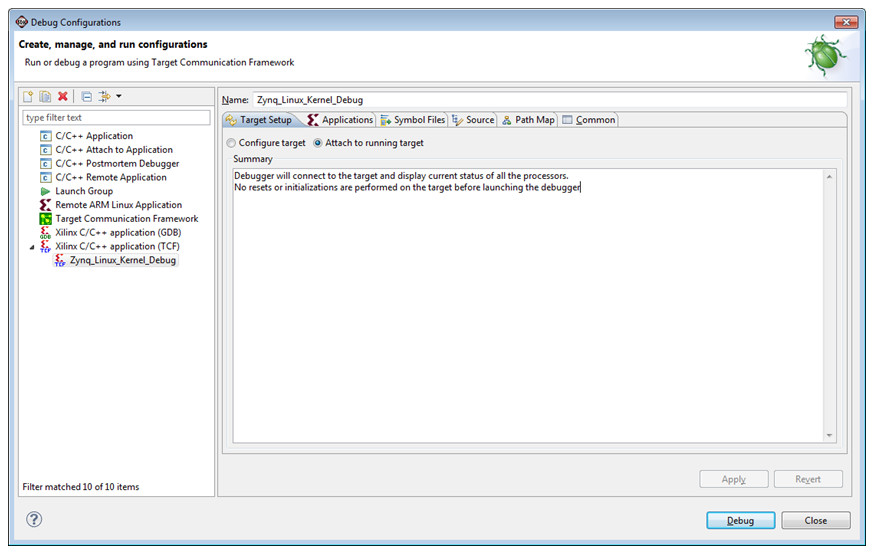
- Debugging begins, with the processors in the running state, as shown below.
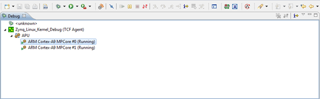
- Click the button to suspend the processor. Debug starts in the Disassembly mode.
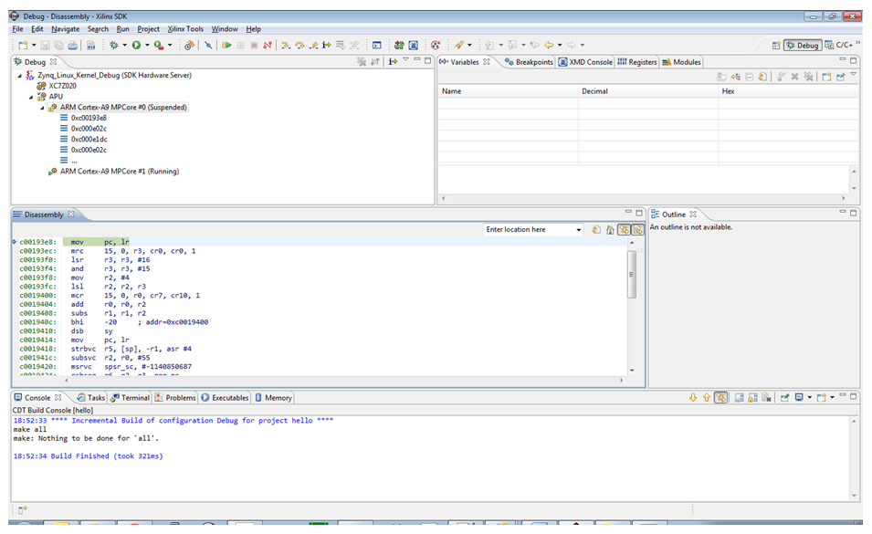
- Add the vmlinux symbol file:
- Right click and select .

- Click .
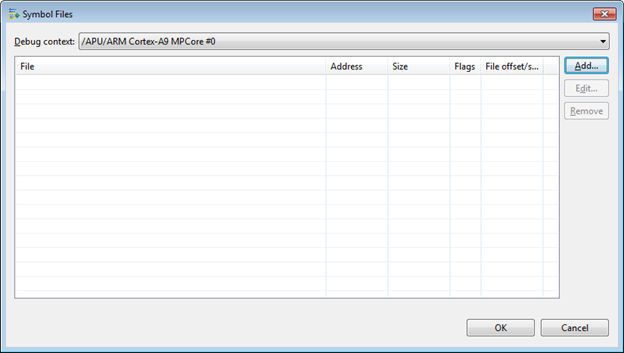
- Add the vmlinux symbol file and click OK.
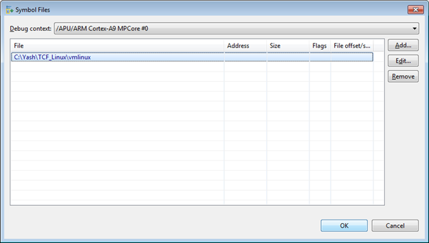
- You must setup “Source Lookup” if you built the code on a Linux machine and try to run the debugger on Windows.
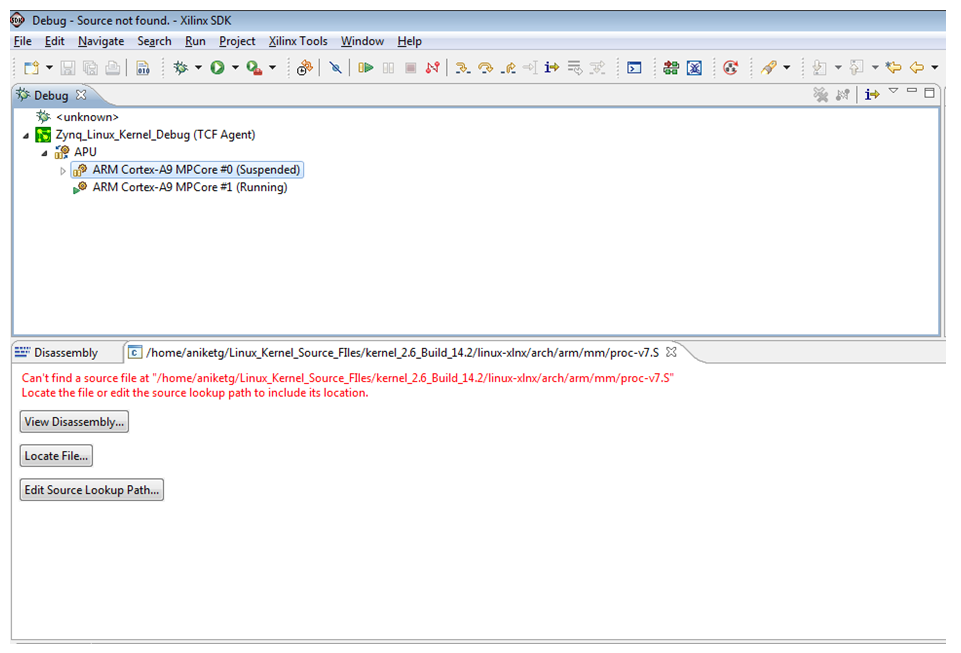
- Select the debug configuration Zynq_Linux_Kernel_Debug and right-click it to select .
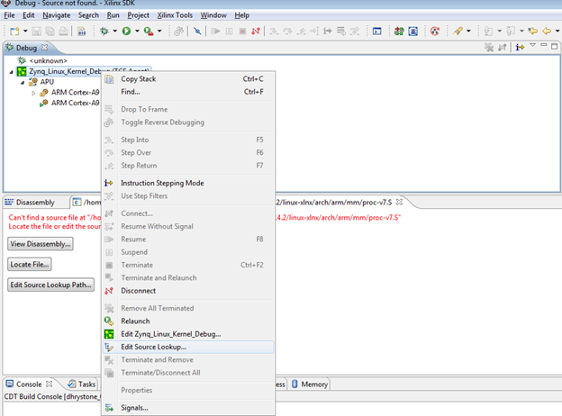
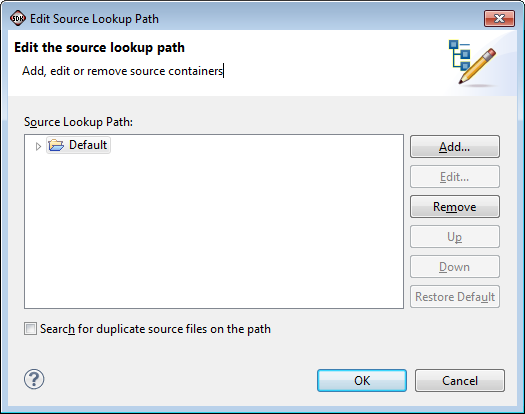
- Click Add and select Path Mapping from the Add Source dialog box.
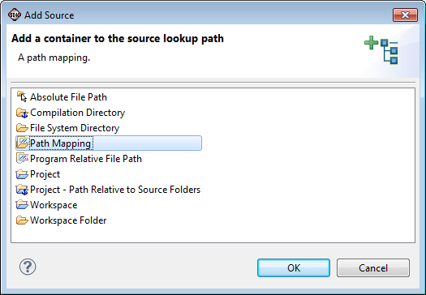
- Add the Compilation path and local file system path by clicking .
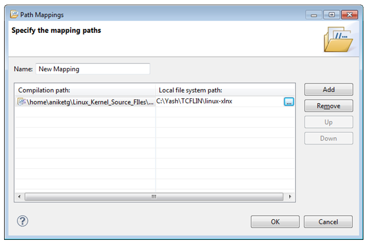
- Successful source lookup takes you to the source code debug.

- You can add function breakpoints by clicking the button in the Breakpoints view.
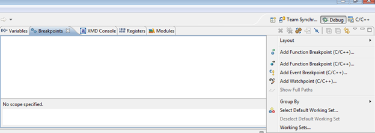
- Add a breakpoint at the start_kernel function.
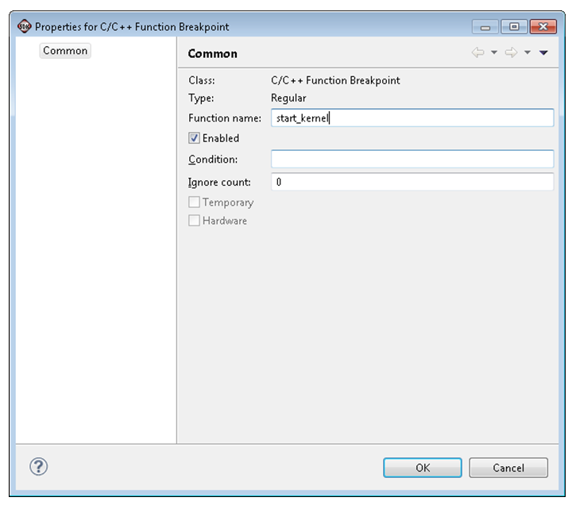

- Press the reset button. The Zynq®-7000 processor boots from the SD card and stops at the beginning of the kernel initialization.
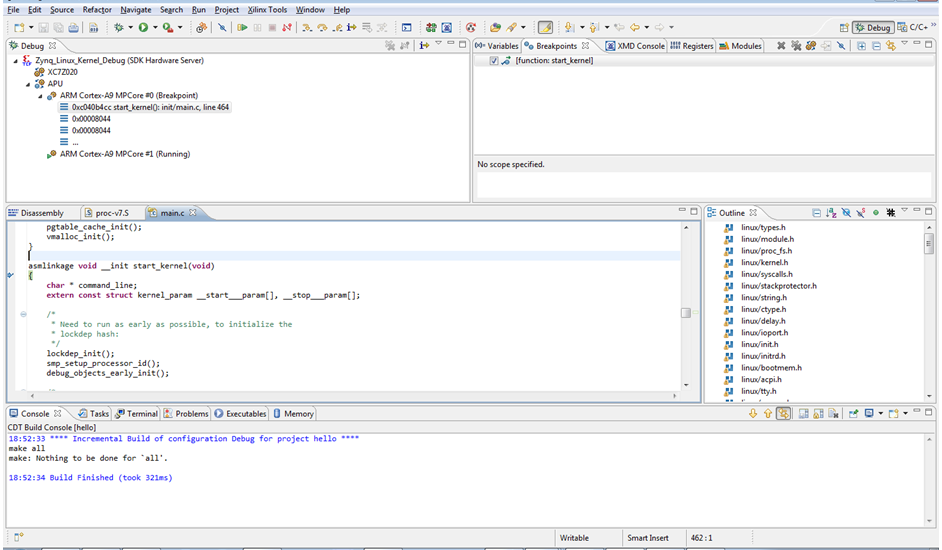
Note: The Linux kernel is always compiled with full optimizations and inlining enabled. Therefore:
- Stepping through code might not work as expected due to the possible reordering of some instructions.
- Some variables might be optimized out by the compiler and therefore not be available for the debugger.

SDK System Debugger (TCF)
Copyright 1995-2013 Xilinx, Inc. All rights reserved.